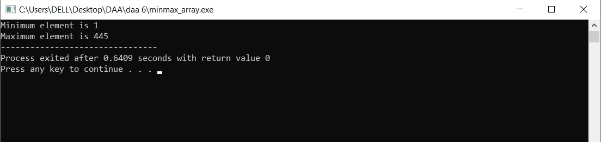

Experiment 5B: Problem Statement 2
Write a program in any language to find maximum and minimum element from the array
Code
Results
Sample Output 1

Variables Used
- min: For minimum element in the array
- max: For maximum element in the array
- arr_size: Size of the array
- arr[]: To store an integer array